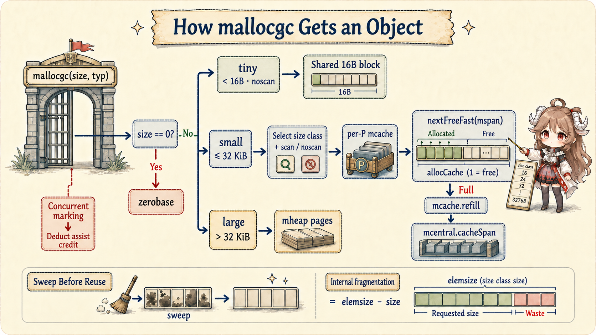
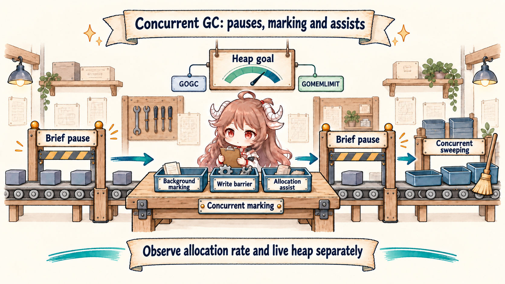

Reading goal: do not treat “heap” as a bad word. First separate three questions: why must an object outlive the current function, how many new objects does the program create each second, and how many remain alive when GC runs? The second half enters escape analysis, allocation, and concurrent GC source.
The language does not promise that a value lives on a stack or heap. Concrete decisions are pinned to the Go 1.26.0 tag: escape.go, malloc.go, mgc.go, and mgcpacer.go. Metric and profile definitions come from the official runtime/metrics, runtime/pprof, and Diagnostics documentation.
1. An Object on the Heap Is Not Automatically a Problem
In fetchd, a local value used only for one calculation and discarded when the function returns can often live on
the goroutine's stack. A result that is returned, handed to another goroutine through a channel, or retained in a slice may
need to outlive the current call. Putting it on the heap preserves the correct lifetime; it is not a compiler failure.
Three different measurements determine whether there is a problem: allocation rate is how quickly requests create new objects; the live set is how much remains reachable when GC runs; and latency cost is how much allocation or GC work lands on a request. Reducing allocation has a clear purpose only when one of those measurements conflicts with the system's goals.
| Question | First evidence | What it cannot prove alone |
|---|---|---|
| Why is it on the heap? | -gcflags='-m=2' plus the code that retains it | Whether optimization is worthwhile |
| How much does one path allocate? | Benchmark plus -benchmem | Who survives in production |
| Who retains the heap? | Heap profile, in-use view | Historical allocation traffic |
| Who creates allocation traffic? | Allocs profile, cumulative view | The current live heap |
| Does GC affect latency? | Metrics, gctrace, execution trace | Where one object should live |
2. Ask “How Long Must It Live?” before Stack or Heap
The Go specification describes values, addresses, and observable behavior; it does not require a syntax form to live
on the stack or heap. The compiler's escape package states two invariants: pointers to stack objects cannot be
stored in the heap, and pointers cannot outlive the stack objects they reference. If the compiler can prove an
address stays within a frame's lifetime, even new(T) may stay on the stack. A plain local can instead move
to the heap when its address is returned, captured, or stored in a longer-lived object.
//go:noinline
func stackResultChecksum() int64 {
result := fetchResult{
URL: "https://go.dev", Status: 200, Bytes: 42,
}
return result.Bytes + int64(len(result.URL))
}
//go:noinline
func escapingResult() *fetchResult {
return &fetchResult{
URL: "https://go.dev", Status: 200, Bytes: 42,
}
}
“Returning a pointer is always slow” is not a stable rule either. Inlining, interprocedural propagation, and later
compiler versions can change the result. The lab uses //go:noinline to make its shape explicit, not as a
production recommendation. Read the report for the actual build, then verify allocation counts.
2.1 The Compiler Builds a Weighted Location Graph
Escape analysis maps variables and implicit allocations to locations, then turns assignments into directed edges.
An edge's weight is dereference count minus address count: p = &q is -1,
p = q is 0, and p = *q is +1. It then walks paths that could violate the two invariants.
If an address reaches the heap or another location that may outlive it, its location requires heap allocation.
Interprocedural flows are summarized as parameter tags for static call sites.
The graph is a conservative approximation. The source explicitly says it generally lacks full flow, path, and context sensitivity, and does not distinguish separate struct fields or slice elements. “Escapes to heap” means the compiler lacks a sufficient proof for the current frame. It does not mean the object leaks or that GC is currently under pressure.
2.2 Read -m=2 as a Flow Report
Across the full fetchd build report,
memory_lab_test.go
includes &fetchResult{...} escapes to heap and an escaping backing array for
make([]fetchResult, 0, count) when the capacity is dynamic. The real handler's batch collector also reports
append escapes to heap. The point is not to count the word “heap.” Explain who keeps each value reachable and how long it must live:
a pointer leaves the function, a returned slice still references its backing array, and append may publish a replacement array.
cd go-runtime/examples/fetchd
go test -run '^$' -gcflags='-m=2' ./...
Interface boxing, closure capture, and logging arguments may add more reports. Some matter in a hot path; some are
initialization noise. Filter by the relevant call chain and align the report with allocs/op. If analysis
is conservative but a robust benchmark observes zero allocations, inspect inlining, constant folding, and dead-code
elimination before declaring either result contradictory.
2.3 Slice Preallocation Avoids Backing-Array Migrations
A slice header is a pointer, length, and capacity. Preallocation does not “move the header to the heap”; it lets a
known upper bound obtain enough backing storage once. Repeated appends past capacity call growslice,
allocate a larger array, and copy old elements. The growth policy is a current runtime implementation detail, not a
business invariant that capacity always doubles.
// growth path
var results []fetchResult
for i := 0; i < count; i++ {
results = append(results, fetchResult{N: i})
}
// one backing allocation for a known upper bound
results := make([]fetchResult, 0, count)
for i := 0; i < count; i++ {
results = append(results, fetchResult{N: i})
}For 64 results, this lab consistently measured 7 allocs/op and about 9.1 KiB/op for incremental growth, versus 1 alloc/op and about 4.8 KiB/op with preallocation. The escaping pointer path used 1 alloc/op and 64 B/op; the checksum-only value path used 0 alloc/op. Those numbers describe this shape, not a cross-platform constant. Excess preallocation can enlarge the live heap, so use a trustworthy bound rather than “as large as possible.”
3. mallocgc Routes by Size and Pointer Shape
Keep following the same batch of 64 results:
append runs out of capacity → request a larger backing array → copy old results
without preallocation, this lab allocates seven times
each request eventually enters the allocator
the accumulated new memory reaches the next GC heap goal sooner
Separate two layers: growslice explains why the application needs another block, while mallocgc
explains where the runtime obtains it. Raising GOGC may delay the next collection, but it does not erase those
seven backing-array requests. Reducing allocations and changing collection frequency are different actions.
Go 1.26.0 first short-circuits a zero-sized request to shared zerobase. On the regular path, small objects
are roughly at most 32 KiB. Pointer-free objects below 16 B may enter the tiny allocator, packing multiple values into
one 16 B block. Other small objects split by size class and scan/noscan shape; large objects allocate directly from heap
pages. Pointer-bearing objects also need correct bitmap and zeroing state so the collector knows which words to scan.

if size == 0 {
return unsafe.Pointer(&zerobase)
}
if gcBlackenEnabled != 0 {
deductAssistCredit(size)
}
// small noscan / small scan / large routing follows
Size classes make fixed-sized slots cheap to manage, while introducing internal fragmentation of
elemsize - requested size. Tiny packing has another tradeoff: if any object in a 16 B block remains
reachable, the entire block stays live, so this applies only to noscan objects. Applications control object shape,
batch size, and when caches are returned or discarded—not runtime spans directly.
3.1 The Fast Path Is the Current P's mcache and mspan
nextFreeFast finds a trailing zero in the current span's allocCache, advances
freeindex, and computes the slot address. It does not visit the global heap for every object.
When a cached span fills, mcache.nextFree calls refill. Refill returns the full span to the
central list and obtains a span with space from mcentral.cacheSpan. The source requires a non-preemptible
context because the cache belongs to the current P, and the goroutine could resume on another P after preemption.
func nextFreeFast(s *mspan) gclinkptr {
theBit := sys.TrailingZeros64(s.allocCache)
if theBit < 64 {
result := s.freeindex + uint16(theBit)
// advance cache and return s.base + result*s.elemsize
}
return 0
}“Small allocation is fast” describes the common fast path, not a zero-cost system. Refill can entail sweeping and a GC trigger check; zeroing and sanitizers add work; most importantly, cumulative allocation advances the heap goal. A nanosecond-scale allocation repeated at high QPS can still turn substantial CPU into marking and sweeping.
4. GC Performs Concurrent Marking between Two Brief Stops
First picture GC as an inventory of results that somebody still holds. Starting from roots such as goroutine stacks and globals, an object reachable by following pointers must stay; one unreachable from every root may be swept. Source uses colors for progress: white means not yet confirmed, grey means found but its outgoing pointers still need inspection, and black means fully inspected. These are states in one marking cycle, not permanent properties of an object.
The runtime's own overview is explicit. It completes sweep termination under a brief stop, enters _GCmark,
prepares root jobs, enables the write barrier and mark workers, then resumes mutators for concurrent marking.
Once the mark-completion condition holds, another stop enters _GCmarktermination for final work and
accounting. The runtime returns to _GCoff, disables the barrier, and sweeps concurrently.

“Go GC is concurrent” and “Go GC has STW” are both incomplete. Examine pauses, concurrent CPU, assist charged to the request, and changes in live heap together. Pause quantiles alone can miss tail latency from request goroutines doing GC work; GC CPU alone can mislabel an application allocation spike as a collector regression.
Phases and full cycle: mgc.go overview; gcStart.4.1 The Hybrid Write Barrier Keeps White Objects Visible
Applications still mutate heap pointers during concurrent marking. Go's hybrid write barrier shades the old object in a slot before publishing the replacement. While the current goroutine's stack is grey, it also shades the new pointer. A mutator therefore cannot hide the only reference by moving it among heap and scanned or unscanned stacks. The compiler can omit barriers for writes to the current frame, while heap publication obeys the pre-publication rule.
writePointer(slot, ptr):
shade(*slot)
if current stack is grey:
shade(ptr)
*slot = ptr
This helps explain why pointer-rich objects and pointer-free buffers have different scanning costs. Do not smuggle a
pointer into uintptr to “avoid scanning”; that breaks reachability and lifetime rules. Improve scan volume
with compact structures, smaller accidental object graphs, and timely removal of references from requests, sessions, and caches.
4.2 If Allocation Outruns Marking, the User Goroutine Assists
Concurrent marking is not a free background service. While GC is active, mallocgc deducts assist credit in
proportion to allocation size. When a goroutine's debt becomes negative, gcAssistAlloc first tries to use
global background scan credit; if that is insufficient, it scans object graph work directly. This connects the producer
of allocation pressure to part of the marking bill and helps marking finish before the heap goal.
allocation
→ deductAssistCredit(size)
→ assist debt below zero
→ steal background scan credit or gcAssistAlloc1
→ goroutine pays marking work before continuing
GC assists on allocation-heavy goroutines in an execution trace are more actionable than “GC occasionally jitters.”
First reduce avoidable allocation bytes on the request path; only then tune GOGC. Otherwise the tuning
changes when the bill is paid without changing the bill.
4.3 GOGC and GOMEMLIMIT Constrain Different Things
GOGC scales the next heap goal from the previous live heap. At the default 100, a useful approximation is
that new allocation may approach the current live heap before the next cycle must finish. GOMEMLIMIT gives
the runtime a soft memory limit. The controller derives a memory-limit heap goal from runtime-managed mapped memory and
reserves headroom. The effective target uses the tighter GOGC-derived or memory-limit-derived goal.
| Control | Main tradeoff | Wrong interpretation |
|---|---|---|
| Lower GOGC | Smaller heap, more GC CPU | Automatically lowers business allocations |
| Higher GOGC | Larger heap, usually fewer cycles | Removes memory-limit risk |
| GOMEMLIMIT | More collection pressure to defend a soft target | A hard heap cap or exact container limit |
| Both | Proportional and environmental goals compete | GOGC stops mattering once a limit is set |
A soft limit is not an OOM guarantee. Non-Go memory, mappings, cgo, kernel page cache, and container accounting can use different scopes. Under an extreme limit the runtime must also avoid GC thrashing that starves the application. Production settings need load tests across container headroom, live set, peak traffic, CPU budget, and tail latency.
Pacer goals, 25% background utilization, and memory-limit headroom: mgcpacer.go; configuration semantics: SetGCPercent and SetMemoryLimit.5. Observe Allocation Rate Separately from Live Heap
The lab reads /gc/heap/allocs:bytes, /gc/heap/allocs:objects,
/gc/heap/live:bytes, and /gc/cycles/total:gc-cycles through
runtime/metrics. The first two are cumulative allocation, live bytes are the objects confirmed live by the
previous GC, and cycles describe collection cadence. Their definitions and sampling points differ; allocs minus live is
not a precise reclaimed-byte counter.
samples := []metrics.Sample{
{Name: "/gc/heap/allocs:bytes"},
{Name: "/gc/heap/allocs:objects"},
{Name: "/gc/heap/live:bytes"},
{Name: "/gc/cycles/total:gc-cycles"},
}
metrics.Read(samples)| Tool | Best question | Limitation when used alone |
|---|---|---|
go test -benchmem | B/op and allocs/op for a controlled path | Not the production traffic distribution |
| Heap profile | Who still retains memory at the sample | Default view is in-use, not all history |
| Allocs profile | Who cumulatively created allocation traffic | High cumulative volume is not a leak |
runtime/metrics | Service trends and alerts | Read metric description and kind first |
GODEBUG=gctrace=1 | Per-process GC cycle summaries | Temporary diagnosis, not tracing |
| Execution trace | Assist, STW, and goroutine timing | Bound the collection window |
cd go-runtime/examples/fetchd
go test -run 'Test(AllocationShape|RuntimeMetrics)' -count=20
go test -bench BenchmarkAllocationShapes -benchmem -count=3
go test ./...
go test -race ./...
go vet ./...6. A Memory Checklist for fetchd
- Write down who retains a value and when it is released. Keep request temporaries inside the handler; put truly asynchronous data in an explicit session or process structure and remove its references at completion.
- Use reports to explain flows and benchmarks to judge value.
-m=2is not a performance ranking. - Preallocate from a credible bound. Avoid repeated backing-array migration without trusting unbounded input.
- Reducing bytes may matter more than reducing object count alone. Measure both alongside CPU and latency.
- Separate allocation rate from live heap. The former creates collection work; the latter sets the graph that must remain scanned.
- Put mark assist in the request latency model. GC CPU does not belong only to background workers.
- Load-test GOGC and GOMEMLIMIT headroom. Record container RSS, runtime memory, GC CPU, and tail latency together.
- Do not depend on allocator internals. Size classes, tiny packing, and specialized malloc can change with versions and experiments.
The reusable conclusion is: escape analysis decides whether an object can safely stay in a frame; allocation rate determines how much collection work the application creates; live heap determines the object graph the collector must continue to maintain. The final chapter returns this request to the network: connection reuse, HTTP/2 concurrency, and a joint diagnosis with httptrace, pprof, trace, metrics, and race.
Source and documentation map
- Go 1.26.0 escape analysis invariants and location graph
- A Guide to the Go Garbage Collector
- nextFreeFast, mcache.nextFree, and mallocgc
- mcache.refill
- Concurrent GC cycle overview
- Hybrid write barrier
- Mark assists
- GC pacer and memory-limit headroom
- runtime/metrics package documentation
- Profiling Go Programs
- Diagnostics
- fetchd memory lab